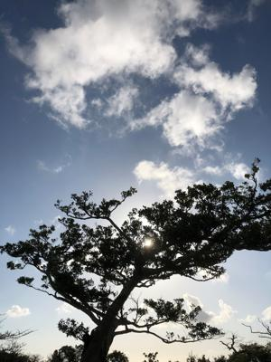
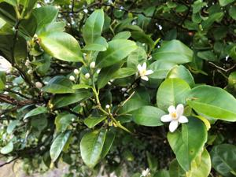

うるがいの話 ある日
最新: テレビ電話面会【うるがいの話 ある日】とは 一日だけのプログです
『うるがいの話』の最新一日だけのプログで、通信料が少なく経済的だ。カニの画像をクリックすると全ての日付が載る『うるがいの話』サイトを表示します
|
|
【うるがいの話】 うるがい(ｳﾙｶﾞｲ urugai)とは、『もずくがに』の名前でとても大きくなります。 |
|---|---|
|
|
【カミマヤーの話】 猫のことを方言でマヤーといいます。カミマヤー（kamimayaa）とは、神の猫のことです。 |
|
【たながぁの音楽】 たながぁ（ﾀﾅｶﾞｰtanagaa）とは手長えびのことで、何種類かあり大きいのは車 エビぐらいになります。 |

|
【ぶながぁの話】 ぶながー(bunagaa)とは、赤い髪の毛、赤い身体、そして身長は１ｍ２０ｃｍ ぐらい、川の蟹を食べているの目撃された。場所は沖縄県国頭郡大宜味村のと ある村僕の隣近所に住んでいる爺さんから、聞いた話です。 |
|
|
【ギーマの話】 ギーマ(giima)とは、山原の里山に咲くスズランに似た、 花を付けます。実は食べられます、 気が付くと口の周りが紫になっています。 |
2022年03月14日 (月）テレビ電話面会
16:31

ヨメはお母さんとテレビ電話面会なるものを、１０分程行った。ニュースなど
で知っていたが、コロナ禍での対応である。午後の３時からだが込むと言われ
たので１０分前には並ぶ、それでも３番目だった。ヨメのお母さんは明るけれ
ば楽しいが、・・・暗いのである、ヨメは疲れて面談を終えた。

昨日、２０１６年製作の『ドリーム』（原題: Hidden Figures）を録画で観た
ＩＢＭのコンピュータを出てくる、パンチカードを読み込ませ大型のプリンタ
ーに印刷させるシーンが出てくる。これって１９６０年の時代だが、私が大学
２年生で受けたコンピュータの自習（言語ＦＯＴＲＡＮでサインコサインの図
をプリンターに印刷させること）のため、生協からパンチカードを買って電子
計算機センターなる所でプログラムを頼み、プリンターに印刷してもらうこと
をしていた、１９８１年頃である。映画とあまり変わらない環境だった。それ
に比べ、今は凄い進化している。進化していないのはプーチンの頭の中で、こ
の前読んだロシア発禁の「煉獄のなかで」の本に書かれている独裁をそのまま
実行している。暑い日、半そで、短パンで過ごす。
１６時２７分 ビットコインの総資産 ￥１３、２４０↓